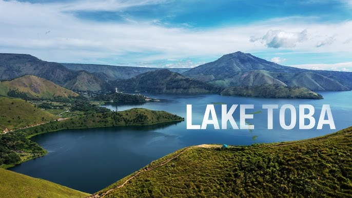
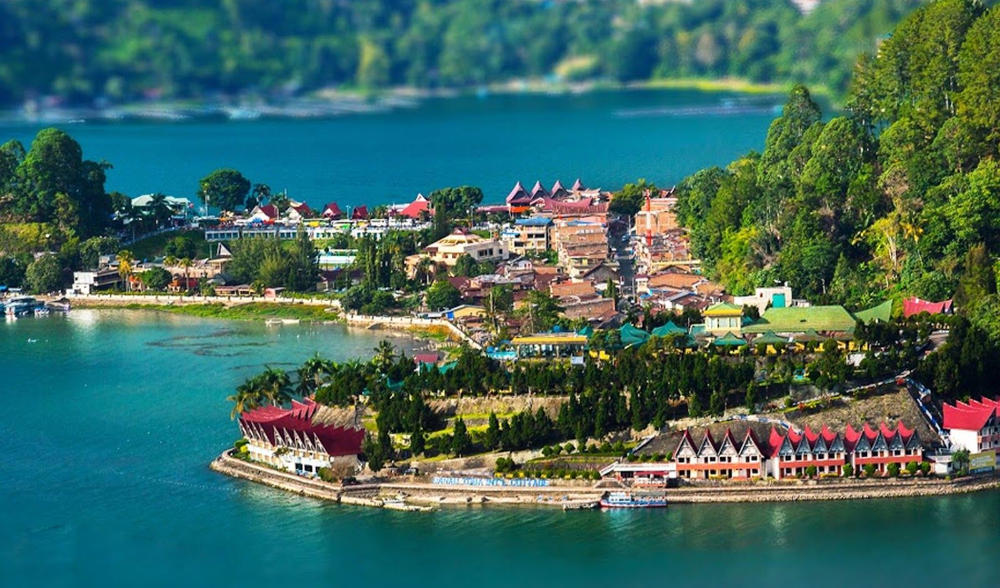
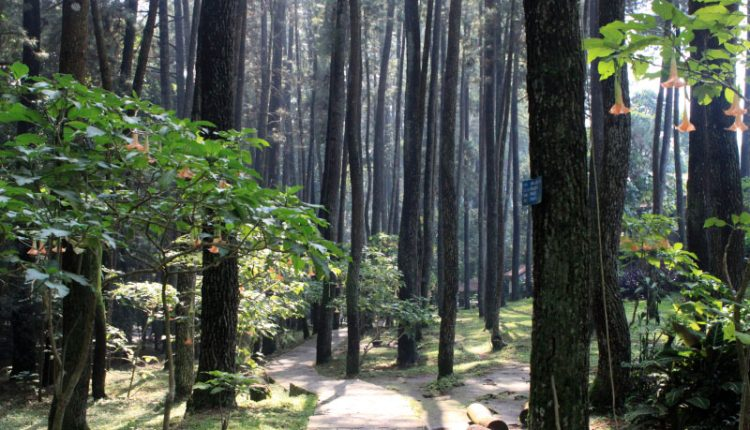
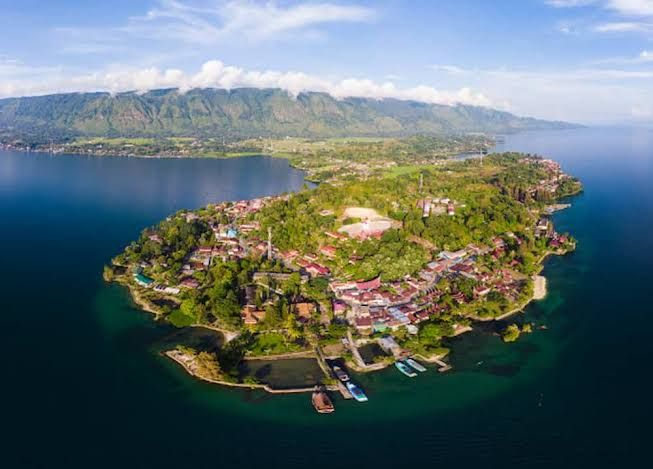

Tourist Places
Tempat wisata di sekitar Pangaribuan adalah seperti:
- Danau Toba - Danau vulkanik terbesar di Indonesia yang terkenal dengan keindahan alamnya. 
- Parapat - Salah satu kota kecil di tepi Danau Toba yang sering dikunjungi wisatawan. 
- Hutan Pinus Sibolangit - Area hutan pinus yang sejuk dan cocok untuk rekreasi keluarga. 
- Pulau Samosir - Pulau di tengah Danau Toba yang menawarkan budaya dan keindahan alam Batak. 